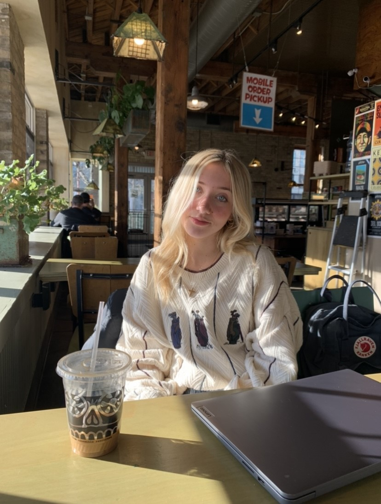

In general, this webpage will serve as a hub of information to allow potential future employers or interested individuals to gain insight into Corinne's experiences, knowledge and background. Though this site of course doesn't encompass everything, it can be a baseline that lends into her future aspirations and skills. Enjoy!